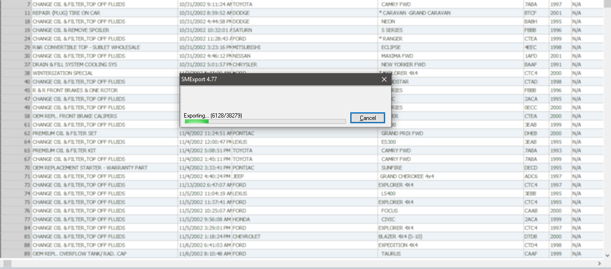

About
The customer contacted me requesting a fully built integrated cloud-based customer management system with scheduling and many other tools. Being the daring and naturally intriguing idea that this was, I couldn't help myself.
Objective
The base objective was to take all of the data from their previous invoicing & customer management software & integrate it seamlessly with a fully cloud-base scheduling, invoicing, & CMS system.
Below is a redacted version of the outcome of the customer page
Process
Looking back at the overall process, it was a complete nightmare. From organizing the 100,000's of lines of customer data to integrating it all into one system fed off one database. Thankfully, I didn't look at it from that perspective while building the product.
Breaking down the process into three parts is what kept it semi-organized and proportionate. The three main portions are as:
- Extracting Data
- Planning Execution
- Integration
The portion that took the longest amount of time without a doubt is the extraction stage. Exporting the data wasn't as simple as copying a database, it was much --much-- more. Because of the way the previous program was setup, it required combining multiple databases and organizing those databases before any of the data was of any value.
Below is a example of what extracting the data looked like
